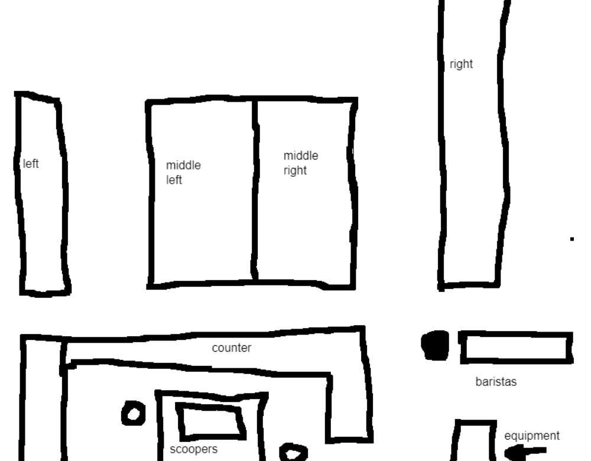

Hello! This website is for my dad. Click here if you are NOT my dad. If you are my dad, looks like the email got sent eh? That's good. This website will go over my accomplishments at school and even ones that aren't at school. By the way, if you've made up your mind on getting the gaming laptop, don't bother asking me which one to get, I already know, I have been researching A LOT about computers and laptops and the specifications for them, I know more than last time and I've made up my mind, you can click the big bold text at the top of the screen at all times that says "Why I would like a Gaming Laptop for Christmas" (By the way, it isn't at the Best Buy near us, we have to order it online.) Also, if you see red text, it means that is pretty important and I highly suggest reading it. And also, if you're wondering, every single thing on this website is hand typed all by me, I am not using any "Website Maker" or anything, this is all pure HTML that I've typed with my fingers, and you can even see my code by using CTRL + U on this website. Without further adieu, let's begin.
In the past year, I have done.
GFMUN (Gordon Fairweather Model United Nations)
It was a professional event hosted by my school, were we had to represent a country and have to talk about specific questions like we were the leaders of said country. The people behind the event gave me China and I had to talk about environmental problems like Climate Change. If you know anything about China and its Climate Change issues, you'll know that it's not good. So I was basically tasked the hardest country, so people were firing questions at me and I had to answer them all regarding Climate Issues in China. And I would say about 95% of the people in the room were random people from different schools, so it didn't really help, but I managed to pull it through.
Selling school snacks / The Snack Shack
Oh boy... Where do I begin? This will probably be a story I'll be telling my Grandkids when I'm old... Throughout the entire rest of the school year last year (after christmas break.) My entire grade had to sell something and advertise it. We first had to think of a brand name for us, since we decided to go with selling snacks, we named ourselves the "Snack Shack". We all knew that it was perfect, we made a sign and everything. And then, we had to get people around the school to fill out a form about what their favorite drinks and snacks are so we can see our demographic. I decided that it would be nice and really cool to copy every single form and dump them all into a single Google Sheet so we can all easily share the answers and see them at anytime we want, anywhere. There were 27 forms that I typed in all by myself and it was pretty fun. We first got our starting at the Holiday Market (Which I will be helping out with this year) by selling snacks in a tucked away room. At first, me and my groupmates were positive that we were not going to do well because of our location. But we were quickly proven wrong since I had a hard time writing down the peoples names in time on the Reciept that we needed (We needed to have proof of sales) by the end of it, we've made about $150 dollars. Which was outstanding, I think we did the best at this project in this schools history, we were already halfway there on the first day of selling (We had to get to $300 to fully profit.) After that day, we needed to sell more. So we were all thinking and we decided that it would be a great idea to announce and advertise the business in the schools chapel. We were all debating who would do it, and that's when I stepped in. I stepped in to speak in front of the ENTIRE school to advertise snacks for our group, now. I was a different person when this happened. Back then, I didn't know anybody basically (since I was in a brand new school with brand new people) but I still got up there and I announced and announced and announced about our snacks every, single, week. This was also the same reason that you got me the new VR Headset, that one teacher came up to you and said that I made everybody laugh with a joke. I made so many announcements, it was to the point that the principle said "Let's stop advertising our projects because it's taking up too much time and stuff yadda yadda yadda." I announced for MONTHS. Every single time it was grind time for me, I'd announce it, and during a specific time I would set everything up in an area and sit there and wait for the sales to come in, every single week. I really did not mind at all that I was selling all by myself, it was for a good cause (charity) and everybody else was busy so I understood. And when it was nearing the end of our time for selling, we sold Popsicles (because we threw kind of like a party in the class, a group of girls were handing out candy to everyone in the class, then the guys in my group grabbed all the snacks and were throwing them everywhere, it was awesome.) Popsicles did better than we expected, since we set it up right outside of the Dining Hall, and it was a very hot summer day. Everyone ate all that up. I started feeling bad to the guy on the other side of us selling smoothies and shakes and getting a total of 3 sales, meanwhile we were having like 30 eyes on ours at once. At the end, we reached our goal of raising $300, from what I know we were the only group to do so that entire year so, good job team. This was ultimately a fun experience and I will be forever grateful of it and the impact that we as a group had on the school.
The Embed has been removed because it kepy shooting you up all the way back to the top of the page and being very annoying to deal with :D
Here is the Reciept I spoke about earlier of all the sales to prove that I am not making this all up, if it's not there,
The OMG Luncheon was an event at school that I was doing last grade. Here's what it's about, a CEO of a super rich and successful company comes to the school and talks to the people who signed up for it about how it's like to own a big company and some tips about it like "don't be afraid of taking risks." The ones that I remember seeing are the CEO of the Ganong Brothers (The compant who made the Sunkist Fruit Snacks) and the CEO of the Sea Dogs Hockey Team! It was overall a great experience and it was pretty interesting, there were also really fancy tables there just for us, I'm talking like the white cloth all on top of the table, drinking water out of wine glasses, and getting a specialized breakfast all for us. We really had it good and I really enjoyed my time over there.
Outflow
Outflow is a volunteer service that I plan on helping out in every single time it's open. Before I speak, I need to tell you about what Outflow is, Outflow is a volunteer service where you go to Uptown and give hot meals that the school chefs cooked before hand to homeless and less fortunate individuals in our community. It is a really nice thing to do and I decided to partake in it every single time it opens up, which is every second Wednesday. It takes place in a small church and you do one of 3 things, 1. Scoop up the food, we set up a table in the kitchen and put all the food in containers and scoop them onto the plate and pass them to the other person down the table, usually there are 3 people working on scooping and I was scooping last time I went there. 2. Deliver the meals, it's very self explanatory, after the people are done scooping, they put it on a counter where you pick it up and bring it to people in your designated area, you have to be on alert all the time to see if anyone just walked in the building and needs a meal, there are 3 areas of the place where they eat, the left side, the middle, and the right side, it's more like 4 since the middle is two of them pushed together. The right side is really long and the rest are really short. The amount of people who serve the food is usually 3 people (sometimes 4 depending on how many people showed up.) Most of the times, I've been a Server but I like doing the scooping more. 3. The Baristas, the baristas are the people who work on the coffee, hot chocolate, water, basically anything drink related. I've been a Barista once and I can say that I'm not a big fan of it, when the doors first open, every single person immediately rushes to get a cup of coffee or hot chocolate so it's very busy and crammed. The people as Baristas are always 3 people. As mentioned before, I plan on doing Outflow every single time until I graduate this year, not skipping a single day, and I'll probably still go there often. Outflow is great : ]

Diagram of the church at Outflow.
STEAM Games
Okay, before you get your hopes up. By STEAM Games, I don't mean games that are published on the gaming platform Steam. I'm talking about the School Co-Curricular. STEAM at the beginning sucked in my opinion because I felt like everybody was annoying. Until I realized that I was being a bitch and overreacting, it wasn't that bad. In STEAM, we had to make games based off of a prompt. There would be prompts such as space, farm, etc. I was working hard on these games and I really enjoyed them. We had to make games using the platform "Scratch" and it was fun, even though at the very beginning I felt like I didn't know how to do much. After like a day I was pretty talented at it. I will give you the ability to let you play my games in the browser, no need to download anything! Click on the images and play the game!
Duke Of Ed (short for Duke Of Edinburg) is a process that we have to do at school in the 9th grade where we try new things or get better at things that you've done before. For example, last year, for my sport I've done Golf, for my service I've done Outflow, and for my creativity one I was doing Origami. There isn't really much to say other than we had to do HOURS of the things we've chose. I had to do around 22 hours of Outflow and 11 hours of Golf and Origami.
Round Council
This year, I'm doing Round Council, and I joined the Leadership Round Council. What happens in it is we get to improve our Leadership skills and help out with activities taking place in school. For example, this year I helped out with the Staff vs Students soccer game that happened. My job was to tell people to not eat in the Gynasium. We all meet every second Tuesday and talk about Leadership and school wide activities that we can help organize. We've done more than the Staff vs Students soccer game, we've done activities like Cards for Kindness where you can make cards and give them out to homeless people Uptown who really need one. So basically, Round Council teaches us about Leadership skills and help Organize school activities.
Video Editing
I know that this one is not School Related. But this one is pretty important. I will use this Laptop to make videos and edit them. I feel like I'm very good at Video Editing and I know what I'm doing all the time and can replicate basically any video I see. I have 5 years worth of experience on Sony Vegas Pro but I would like to try and branch out to other video editors like Adobe Premiere Pro and Davinci Resolve. The problem is that my current laptop is not good enough to run Premiere Pro and Davinci Resolve. I have tried both of them before but it is way too slow to actually edit videos on, the only editing software I can run is Sony Vegas Pro because it is very low in performance compared to the others. I will use the Gaming Laptop to try and learn how to use the two other editing softwares (Especially Davinci Resolve) to try and learn something new and to potentially make more effects to make since Sony Vegas Pro is pretty limiting. If you want to see the type of videos I can make with Sony Vegas Pro, look down below for the "Discovery Enviornmental Project 7/7" section, there will be a video embedded to the website where you can watch my Discovery Project and see how I got my 7/7 Grade.
Discovery Enviornmental Project 7/7
Recently, we were all assigned a project called the "Enviornmental Passion Project" where we had to find an Enviornmental issue that is happening near us (Like the city) and we had to be passionate about it. I chose littering because it is an issue around us and I always liked to pick up trash around the neighborhood when I was in Daycare, so I knew that this one was perfect. We had to pick any way to present it, for example, we could make a presentation and show it off to the class, we could make a poster, we could do anything to present this and I chose to make a video about it. This ended up being a great idea since I got a grade of 7/7. The best you can ever get. Linked below is the actual video that I submitted to the teacher. Also, the reason why I used a stickfigure talking instead of me talking in front of a camera. It was because I wanted to replicate a music project I did in the 6th grade where I used a talking stuckfigure. I hope you enjoy the video!
(By the way, the video is in a semi-low quality because I need to save on storage for the website)
Welcome to the Speed Round! This will have a bunch of minor things that I feel like aren't important enough or don't deserve a whole paragraph or an entire story about.
I'm kinda funny. I will use the laptop for good purposes. I worked very hard on this website to convince you. This laptop wont be used for just "Gaming" only, I'll use it for other things like Video Editing and Game Development. The laptop is currently on sale. (Nevermind I checked and it is currently not on sale, I'm very sad now.) It is 2:14 AM right now, the dedication is on fire. I think about having and owning this Laptop every single day. I would like to play VR games on it so I can have a wider selection of games to play (It will also run faster than the Quest 3.) I have dedicated 5 days to work on this with about 1 hour a day. That is 5 hours of my life spent working on this website. The size of the scrollbar shows how much content I poured onto this website.
What I will do with the Gaming Laptop
I've already mentioned one of the things but I will mention it again. I will do Video Editing and try to experiment with other sofware, as of writing this (November 24th 2024 at 1:53 AM) I am unable to try other types of editing software because my laptop doesn't exactly meet the right specifications to run it smoothly and fast. So for the past 5 years, I've been stuck with Sony Vegas Pro, which I do not mind, I love Sony Vegas, I know it better than I know the back of my hand. I already went in depth about Video Editing above, so I'll talk about other things. I would like to learn how to develop games. I have developed many games before, especially with Unity. I am pretty experienced with Unity but I have no idea how to code, I steal scripts from the internet! The downside of making games with my laptop is that it gets pretty slow at times. The things that I have made in Unity are Custom Maps for Games and full on Virtual Reality games playable on the VR Headset, I have made about 15 of them, it's really fun to see how long I can work on one before I get bored and work on something else.
THANK YOU Thank you for taking time out of your day to sit down and read through all of this, or maybe like half of it. It doesn't matter, I'm just happy you decided to click on the link your son has sent you. Hopefully this project has made up your mind about that Gaming Laptop. Have a great day, I fucking love you!!